Reporting Part 1 – Show Me The Data!
Reporting Part 1 – Show Me The Data!
Report Types
As mentioned at the start of the book, the OneStream platform is well-equipped to cater for various levels of reporting across an organization. At Top Training, the analysts work with data to turn it into meaningful information, which the operational team can then use for day-to-day tasks, and the executives for decision-making.
This chapter, and the next, aims to capture an overview of basic reports and dashboards, be a good springboard to further learning, and a good segue to the OneStream Advance Reporting and Dashboards Handbook.
Here is this chapter’s learning journey:
Figure 8.1
As a reminder of what has been covered already, we have discussed OneStream’s report types when presenting data. These are:
Forms: An easy-to-create data entry and presentation output, constructed by using either a Cube View, spreadsheet, or dashboard. Functionality, such as parameters (discussed later), can be used to aid user interaction.
Report Books: Report books allow a combination of report types and files to be brought together in a single report or zip file.
Extensible Documents: Word, Excel, and PowerPoint documents that have embedded dynamic links and parameters to data and metadata within the application. These act as placeholders showing the latest values every time the report runs.
Dashboards: A graphical user interface with multiple formatting capabilities for data grids, charts, and key performance indicator cards, with user interactivity available.
Spreadsheet / Excel Add-in: A spreadsheet-based output for getting the data from the OneStream database, analyzing or amending it, and producing formatted reports
Most of the report types above have a common theme of using Cube Views as a foundation for accessing the data; therefore, Cube Views provide a good starting point when discussing reporting.
Reporting Part 1 – Show Me The Data! › Report Types
Cube Views
A Cube View is a multidimensional set-up (two or more dimensions) comprised of a flexible grid-based view. The data can be viewed by running the Cube View from the Data Explorer icon as shown in Figure 8.2 , or by simply clicking the Cube View from the OnePlace tab (access to the Cube View has to be granted to be in this tab), or from the Excel Add-In. Additional options then allow the Cube View to be run in a report format from the Report Viewer icon or exported to other formats, such as PDF or Excel.
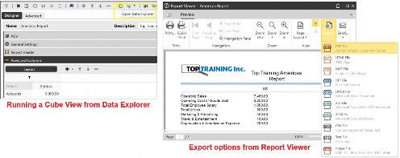
Figure 8.2
Cube Views are considered the main building blocks of reports and are used by the other report types mentioned above. As cubes themselves do not show data in OneStream, Cube Views are used to query and display the cube data. They are simple to create, versatile, and used for analyzing data, inputting data, running calculations, translations and consolidations.
Cube Views can be built and maintained in the Application tab under Cube Views, or built in Workspaces, if the Cube View needs to be used in a dashboard.
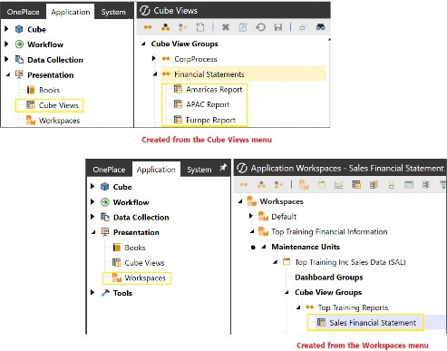
Figure 8.3
For the user to access Cube Views (depending on how the administrator has set this up, as well as security factors), the OnePlace tab in the Navigation pane is the usual go-to (or Excel Add-In if that’s the only user access set-up). The Cube View slider will contain the Cube Views that can be run (just click on each one).
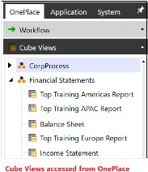
Figure 8.4
Other Cube Views will be in the workflow task, such as a form or the workflow analysis section; they present users with the reports required as they perform their workflow tasks.
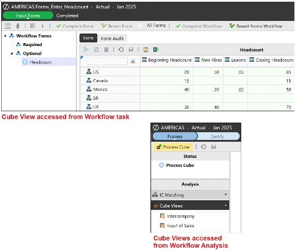
Figure 8.5
Cube Views can also be found within dashboards or within a Spreadsheet (created from the Cube View Connection).
Reporting Part 1 – Show Me The Data!
Building a Cube View for Top Training Inc.
An easy rule to follow when building a Cube View is to have the user in mind; specifically, what are their Cube View requirements? Let’s build an example for Top Training for the Americas region. The initial discussion when building the Cube View will take the form of:
Is the report for analyzing data?
For presenting key performance indicators?
Used by the operational team and therefore requiring detail?
Used by executives who only require high-level information?
Which entities, accounts, and user defined members are required in the report?
Once the framework around the requirements has been drafted, Cube View creation is straightforward.
We start by creating a Cube View Group which will be assigned to a Cube View Profile. The concept of profiles (mentioned earlier in the book) determines where the Cube View can be accessed in the application.
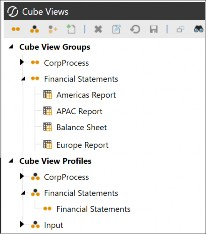
Figure 8.6
Within the Cube View Group, we select Create Cube View and name the Cube View (this can always be renamed if required, but with caution if linked to other components as the renaming does not follow through and may require manual updates within these artifacts). The Description can be used to create a user-friendly name if required. This will be displayed in selected parts of the application where the user accesses the Cube View.
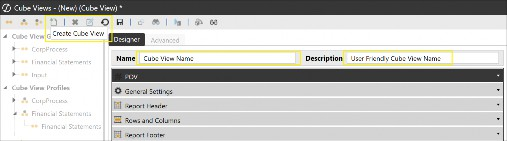
Figure 8.7
Various sliders are available in the Designer tab of the Cube View, with the
Advanced tab having the same content, just laid out differently.
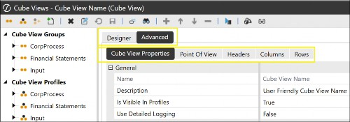
Figure 8.8
Reporting Part 1 – Show Me The Data! › Building a Cube View for Top Training Inc.
POV Slider
The first configuration required is in the POV (Point of View) slider. But, as a reminder, we have already discussed that if this is left untouched (and all the fields remain blank), the Cube View will use the parameters from the Cube POV, and the Cube View will still be able to run.
The configuration starts with selecting a cube (this is where the Cube View will be showing the data from) and then working through the member selection of the 18 dimensions. Where members are going to be defined in the rows and columns, then these can be left blank in the POV.
A neat trick is to drag and drop (or copy and paste) the Cube POV into the Cube View POV, which acts as a starting point. This is useful if only a few members need to be changed for the Cube View’s requirements.
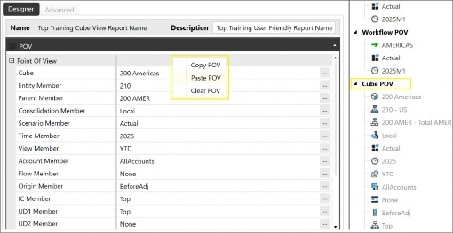
Figure 8.9
Reporting Part 1 – Show Me The Data! › Building a Cube View for Top Training Inc.
General Settings Slider
The General Settings slider offers various column or row template sharing settings. Sharing is a way of using other Cube View structures for their row or column settings, which helps jumpstart our Cube View creation.
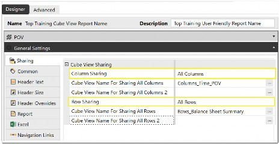
Figure 8.10
Other configurations found in General Settings are the header text and size, plus the navigation link option provides a feature to set up interactivity between Cube Views where a selection change in one Cube View updates another; very useful in dashboards.
Reporting Part 1 – Show Me The Data! › Building a Cube View for Top Training Inc.
Report Header
Here, you can enter header information that will be displayed in the header area when the Cube View is run from the Report Viewer icon or as a PDF.
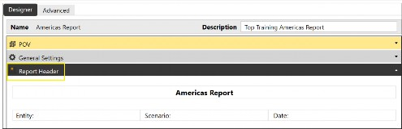
Figure 8.11
Reporting Part 1 – Show Me The Data! › Building a Cube View for Top Training Inc.
Rows and Columns Slider
These define the intersections that will be queried by the cube, as well as adding members to the rows and columns where the Member Filter can be used to assist. The Member Filter is where dimension members, variables, expansions, and expressions can be selected. Various formatting and data settings can be applied to rows and columns, too.
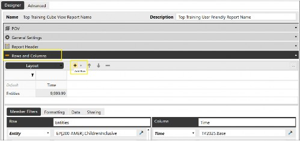
Figure 8.12
The information in a Cube View is determined by its rows (horizontal data cells) and columns (the vertical data cells), which together form a grid. Additional rows or columns can be added by using the + icon and are able to be renamed. Each row has four nested levels available and each column has two. For each level used, a dimension must be selected from the drop down.
The Member Filter can now be applied. This starts off with a dimension token (for example, Entity is E#) and then the corresponding member with an additional filter command if required. The Member Filter, as mentioned, provides the opportunity to expand members in the Cube View, target the current workflow entities, and use functions, variables or expressions. In a nutshell, they are very helpful!
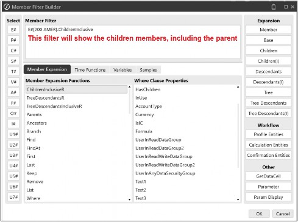
Figure 8.13
Reporting Part 1 – Show Me The Data! › Building a Cube View for Top Training Inc. › Rows and Columns Slider
Overrides
A feature available both in the rows and columns is overrides, accessed from the tab as shown in Figure 8.14 . This provides the required setting for both Member Filter calculations and formatting. Ordinarily, if there is, for example, a dynamic calculation working in both the rows and columns, the row formula will take precedence. But using Row Overrides in the column can change this and the column formulas will be used instead.
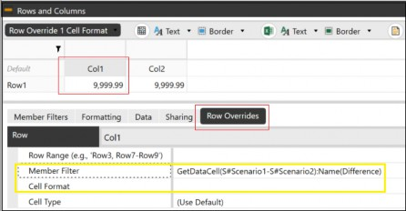
Figure 8.14
Reporting Part 1 – Show Me The Data!
Copying a Cube View
In addition to creating a Cube View from scratch, a faster way can be to copy an existing Cube View from a Cube View Group. The Cube View can be pasted into the same Cube View Group or a separate one. The copied version will have a suffix of
_Copy and needs renaming as two Cube Views cannot have the same name. Then, the settings – POV, General Settings, and rows and columns – can be changed to form a unique Cube View.
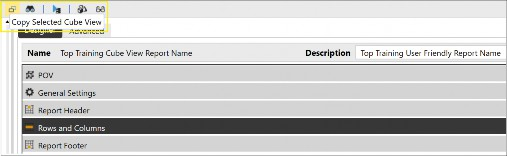
Figure 8.16
Reporting Part 1 – Show Me The Data!
Running The Cube View
The Cube View is run in what is known as Data Explorer mode. In this mode, the data is presented in its grid view, but there are further options that allow the user to see the data as a report in the Report Viewer (which has further options for exporting to various formats).
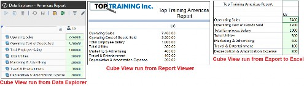
Figure 8.17
To change the data points of the grid, and if a parameter (explained later) has been used within the Cube View, a parameter icon is available to change the members, as shown in Figure 8.18.
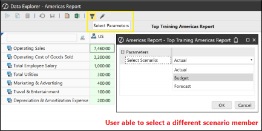
Figure 8.18
The cell has options to drill down further (if applicable) or ascertain each member that makes up the value by using the Cell POV Information feature. This feature has member scripts and formula syntax that can be utilized to see the member names that the cell value in the Cube View is made up of (using the Cb syntax). It can also be used to copy the XFGetCell script to retrieve specific data in a spreadsheet, or the XFCell script that is used in extensible documents or text files.
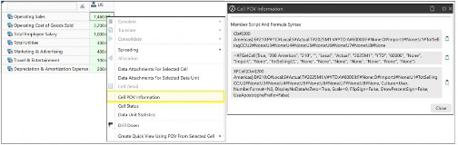
Figure 8.19
Reporting Part 1 – Show Me The Data! › Running The Cube View
Data Cell Values
Cube Views display their values in cells. These can be colored and the colors are configurable. A typical Cube View cell color setting can be:
A green cell is a read-only cell. This displays a valid POV selection, where at least one of the dimensions has a selected member that is not at the lowest level, or the cell data has come about through a calculation, which always displays as read-only (this does depend on the Allow Input setting, but in the context of using CV math, the cell will be read-only).
A white cell will indicate a writable cell and all the selected members are at the lowest level of their hierarchy, which indicates data input. This is only available if the user has write access and the Cube View has been modified in the General Settings as Can Modify Data to True, (the setting can also be applied to individual rows, columns or simultaneously to both).
Figure 8.20 has Price and Volume as white input cells with Revenue as a calculated cell (therefore showing green read-only cells).
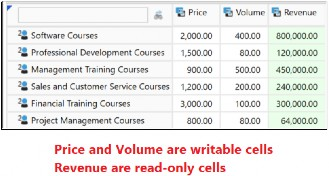
Figure 8.20
In Figure 8.21, a pink cell has come about due to some invalid selection of the POV members. For example, a particular account member does not work with a Flow member selection. Or the members displayed in the report are outside the Cube View’s permitted selection.
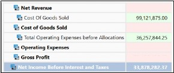
Figure 8.21
Reporting Part 1 – Show Me The Data!
Calculations In Cube Views
Calculations for Cube Views have been discussed in the previous chapter on Figuring Out Calculations. We established that calculations in Cube Views are dynamic and not stored in the database. The calculated cells are derived when the Cube View is executed, and these usually represent key performance indicators (KPIs), variances, or what-if scenarios.
Also, to clarify, it is the data that we load from an import workflow task, or manually enter in a writable cell, that is being used by the Cube View to perform calculations.
With data now seen in the Cube View, it can be used to create calculations in additional cells either through Cube View Math or Cube View Expressions. The Member Filter Builder can assist in creating these calculations. The calculated values will be presented as green cells (if not color configured) that are read-only, as a user cannot overwrite a calculation for Cube View Math.
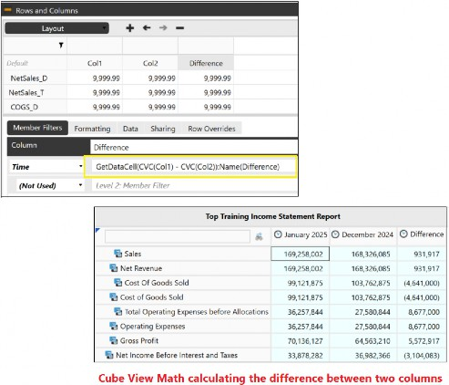
Figure 8.22
Another way data is added to the Cube View (that is then stored in the cube that the Cube View is representing) is by manually entering the values into white writable cells, which can be assisted by the data spreading tool.
Reporting Part 1 – Show Me The Data!
Data Spreading Options
As established, a white cell is writable. As well as being able to enter data in each individual cell, the spreading tool can be used to help populate data in many cells.
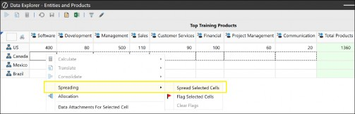
Figure 8.23
Any flagged cells can be set to retain the existing data (in the cells) and not get written over by the spreading tool.
The main Spreading Types are:
Reporting Part 1 – Show Me The Data! › Data Spreading Options
Even Distribution
The amount is distributed evenly across the selected cells.
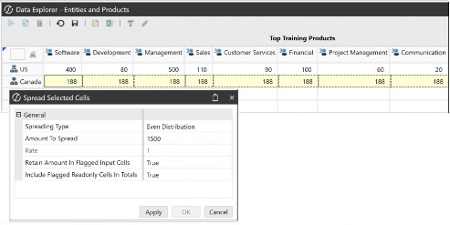
Figure 8.24
Reporting Part 1 – Show Me The Data! › Data Spreading Options
Fill
The same value is used to populate each of the selected cells.
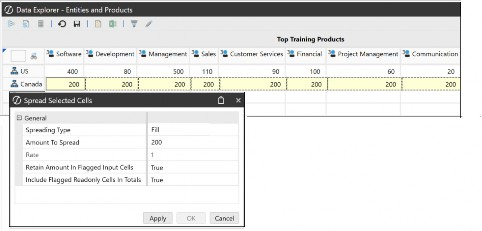
Figure 8.25
Reporting Part 1 – Show Me The Data! › Data Spreading Options
445 or 454 or 544 Distribution
The amount is distributed according to the selected number weighting. For example, 445 will distribute the Amount To Spread with the weight of 4 in the first two selected cells and then 5 in the third.
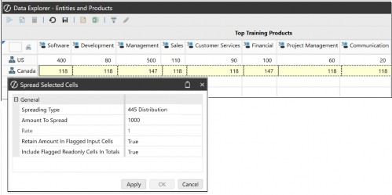
Figure 8.26
Reporting Part 1 – Show Me The Data! › Data Spreading Options
Factor
This will multiply all cells by the specified rate.
Reporting Part 1 – Show Me The Data! › Data Spreading Options
Accumulate
The rate specified is multiplied by the Rate amount, with the result in the first selected cell. The rate is then multiplied by the new value in the first cell to put a result in the second cell, and so on.
For example, the four cells (in Figure 8.27) below will use the rate of 2.5 with the starting amount of 40.
Cell 1 will then be: 40 * 2.5 = 100
Cell 2 will then be: 100 * 2.5 = 250
Cell 3 will then be: 250 * 2.5 = 625
Cell 4 will be: 1,563
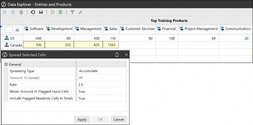
Figure 8.27
Reporting Part 1 – Show Me The Data! › Data Spreading Options
Proportional Distribution
This will take the selected cells’ existing values and apportion the Amount To Spread according to the same proportions. Figure 8.28 shows a newly distributed value from the original proportion.
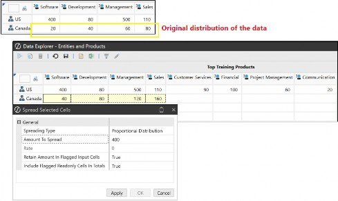
Figure 8.28
Reporting Part 1 – Show Me The Data!
Substitution Variables and Parameters
With a Cube View, we have established that the data we are analyzing is a combination of member selections from each of the dimensions. The members are selected logically from, firstly, the row overrides (in the column), then column overrides (in the row), then row, then column, then Cube View POV, and finally the Cube POV.
The logic also extends to dimensions being set once; for example, once an Account dimension is found, say in the row definition, it will not be continued to look for in the column, Cube View POV, or Cube POV.
The selected members have been hard-coded, so to speak, which means any changes would require the reselection of members. While this is an option, another way is to apply dynamic selection members. These can be in the form of a prompt at runtime that ultimately leads to fewer manual changes in the actual Cube View itself.
In the OneStream platform, the two types of dynamic member selections are
Substitution Variables and Parameters.
Reporting Part 1 – Show Me The Data! › Substitution Variables and Parameters
Substitution Variables
Substitution variables do not prompt the user but instead display the data for the referenced member when the Cube View is run. They can be used to create dynamic headers, footers, or page captions in the Cube View. Further to this substitution, variables can be embedded in Member Formulas. They take the form of a pipe character on either side of the substitution variable name (as per the examples in Figure 8.29).
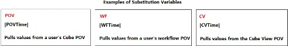
Figure 8.29
OneStream’s substitution variables are all predefined, non-customizable, and no additional ones can be added to the platform by the administrator or end-user. A good use case for using substitution variables in a Cube View is when a common header is used in a Cube View across reports, and these relate to the Cube View name
|CVName|.
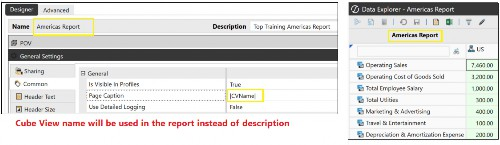
Figure 8.30
Reporting Part 1 – Show Me The Data! › Substitution Variables and Parameters
Parameters
Parameters are created in the platform and are super flexible. They can be used in a variety of objects and set up to prompt a user to do something at runtime. Most of the time, parameters take the form of pipe and exclamation point characters on either side of the parameter name, for example, |!prm_Scenario_Select!|.
When the parameter is being used, the selections are cached by the user (with literal parameters being the exception). This then does not impact other users.
Types of Parameters are:
Reporting Part 1 – Show Me The Data! › Substitution Variables and Parameters › Parameters
Member List
Creates a drop-down list of members.
A good use case for using a member list parameter in a Cube View is when a Cube View must prompt users to select specific Entity, Time, and possible Scenario members.
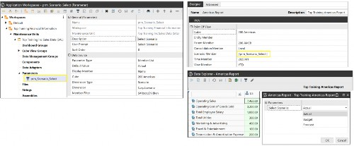
Figure 8.31
Reporting Part 1 – Show Me The Data! › Substitution Variables and Parameters › Parameters
Member Dialog
Creates a pop-up member selection screen.
Reporting Part 1 – Show Me The Data! › Substitution Variables and Parameters › Parameters
Delimited List
Produces a list of members created by the user.
Reporting Part 1 – Show Me The Data! › Substitution Variables and Parameters › Parameters
Input Value
Prompts the user with an empty field to type an input value.
Reporting Part 1 – Show Me The Data! › Substitution Variables and Parameters › Parameters
Literal Value
This parameter ensures consistent settings, such as report formatting standards by Top Training, across all reports. Unlike parameters that require user selection, the literal parameter applies conditions automatically during runtime.
Reporting Part 1 – Show Me The Data! › Substitution Variables and Parameters › Parameters
Bound List
Displays a list of members created using a SQL expression (Structured Query Language takes the form of detailed commands to interact with databases) or a method query (SQL scripts predefined in OneStream).
Reporting Part 1 – Show Me The Data!
Formatting The Cube View
Formatting can take place in many parts of the Cube View. Therefore, to prevent a clash in the view for certain configurations – such as a color selected for a cell in the column setting with another color selected for the same cell in the row setting – the Cube View has a built-in order of operation. In this example, the row setting color will take priority.
Figure 8.32 shows any row setting formats applied, otherwise the search continues downwards, applying the Application Properties settings if specific format options are not found in the column or Cube View settings.
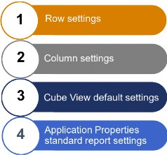
Figure 8.32
There are more intricate forms of formatting, such as Column or Row Overrides, that would be considered the final configuration from the above order. These are discussed in detail in the OneStream Advanced Reporting and Dashboards Handbook.
The standard report settings are found in Application Properties and used to set default formatting on the PDF export or the Cube View. The key settings relate to an organization’s logo, margins, and font sizes, which will then be applied consistently across all Cube Views unless (as mentioned) a particular Cube View setting overrides the standard report setting.
Moving on from standard report settings, formatting options can be targeted to specific outputs of the Cube View. Formatting can be applied individually to the Data Explorer, the Report Viewer, the Excel output, or all three at the same time.
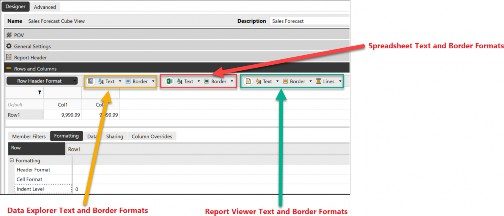
Figure 8.33
Within an individual Cube View, blanket cell formatting can be applied by selecting the default intersection. Alternatively, each row or column or header or cell can have a unique format setting. The data itself can have scaling applied to the original value, converting numbers to represent thousands or millions, with a further option to display a currency code in the cell (for example, USD or GBP).
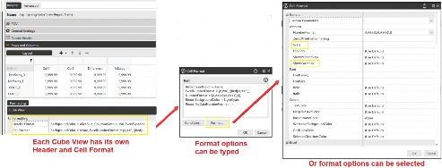
Figure 8.34
Indentations can be applied to make the layout of the report easier for the end-user to read. This can be targeted on a row-by-row basis using an indent setting of, for example, 0, 1, or 2 (potentially up to 20 indent levels).
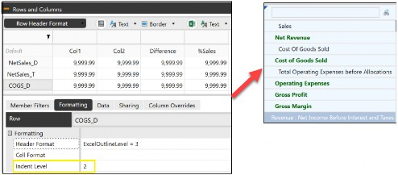
Figure 8.35
Reporting Part 1 – Show Me The Data! › Formatting The Cube View
Formatting Using a Literal Parameter
Parameters have been discussed, particularly how useful they are when it comes to having dynamic selections or to provide the ability to apply consistent settings across many artifacts, such as Cube Views.
When it comes to Cube View formatting, literal parameters can aid an organization’s need for reports to have a consistent look and feel by having, for example, the color, fonts, margin, and settings embedded within the parameters. Then, it is just a case of populating the parameter name in each Cube View formatting field, with the result having the format setting applied at runtime.
This will provide an easy update approach and save maintenance time. By changing any format configurations in the literal parameter, this will cascade throughout all the reports using it.
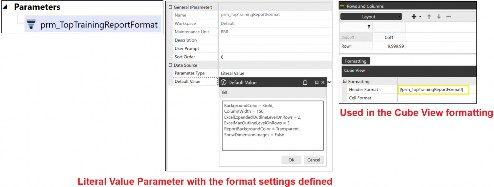
Figure 8.36
Reporting Part 1 – Show Me The Data! › Formatting The Cube View
Conditional Formatting
This can be used to format headers or cells that are driven by a defined criterion. The result can highlight a specific cell or range of cells. A Conditional Formatting Wizard can be found in the Cube View’s cell formatting field that can guide the user on targeted cells.
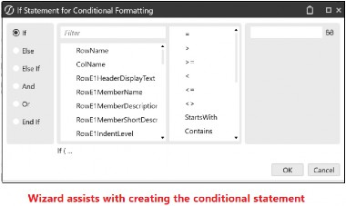
Figure 8.37 The conditional statement is then formed…
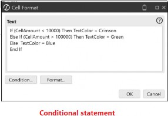
Figure 8.38
…with the result in the Cube View.
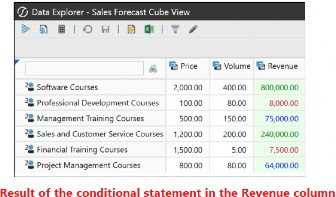
Figure 8.39
Reporting Part 1 – Show Me The Data! › Formatting The Cube View
Suppression Formatting
When a Cube View is run, the data may not be populated in every cell. This is a consequence of the combination of members selected in, for example, the Cube View’s rows and columns, which are then displayed in the report but which have not been part of a data load or manual data entry requirement. The cells can be suppressed and not displayed at runtime for these situations. This is commonly used in larger reports, so they become more manageable for the user.
Suppression settings can be found in the Rows and Columns data tab, providing options to turn on suppression for invalid rows (a result of an incorrect combination of members), cells with no data, or zero data.
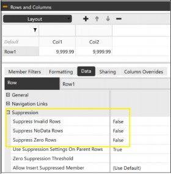
Figure 8.40
Other more detailed forms of suppression are available within the General Settings, which are applied to individual columns meeting a certain suppression criterion (such as having a zero threshold), resulting in rows being suppressed.
Reporting Part 1 – Show Me The Data!
Spreadsheet
The reports presented in spreadsheet format can be accessed from the Application tab and Excel Add-In. In the OneStream ribbon, an additional tab will appear in the Spreadsheet, which is made up of various sections, each providing the user with reporting features.
The Excel Add-In takes on all of Excel’s features. OneStream’s Spreadsheet tool (accessed from the Application tab) will provide most, but not all, of Excel’s features.
Let’s take a look at the OneStream tab on the Spreadsheet.
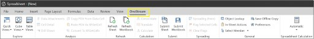
Figure 8.41
Reporting Part 1 – Show Me The Data! › Spreadsheet
OneStream Login
Allows the user to login if accessed from the Excel Add-In.
Reporting Part 1 – Show Me The Data! › Spreadsheet
Refresh and Submit Sections
Refreshes the data displayed, as well as submits the data back to the OneStream platform.
Reporting Part 1 – Show Me The Data! › Spreadsheet
Calculation Section
Able to perform calculation, translation, and consolidation processes if granted permission.
Reporting Part 1 – Show Me The Data! › Spreadsheet
Explore and Analysis Sections
Creates Quick Views, Cube Views, and Table Views, with capabilities to drill down and attach documents to the cells.
Reporting Part 1 – Show Me The Data! › Spreadsheet
Spreading
Offers the data spreading options discussed earlier.
Reporting Part 1 – Show Me The Data! › Spreadsheet
Quick Views In Spreadsheets
As the name suggests, a Quick View takes up less set-up time by displaying an ad-hoc grid.
Once the members have been typed in the rows and columns – within a highlighted area on the Spreadsheet, and the Quick View option selected from the Explore section – a Quick View POV is created (this overrides the Cube POV).
The Quick View POV is where the cube and members are selected, with the option to pivot the rows and columns. The data is displayed in the Spreadsheet but can be changed by reselecting members, as well as using the toolbar features that manage, update, change, and refresh the data.
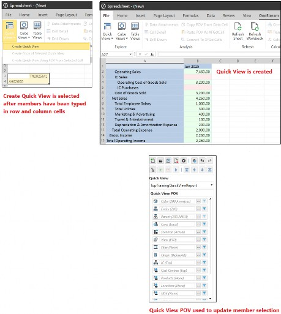
Figure 8.42
A Quick View can also be converted to what is known as a Spreadsheet Retrieve. This provides the ability to see all dimension members in the formula bar for each cell. The combination of these members retrieves the data using the XFGetCell function, as per Figure 8.43. The opposite can apply, and data can be sent back to the OneStream platform using the XFSetCell function.
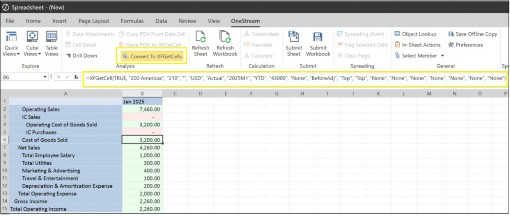
Figure 8.43
Reporting Part 1 – Show Me The Data! › Spreadsheet
Cube Views In Spreadsheets
Another neat way the Spreadsheet tool and Excel Add-in can be utilized is to display the Cube View from the platform into a sheet. With permission to access the Cube View, and the Cube View Profile having the appropriate visibility set (that includes Excel), a Cube View connection can be established. This is a live connection to the database with any Cube View updates flowing through to the Spreadsheet (as opposed to a Cube View export to Excel which will be static data).
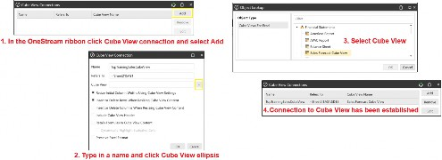
Figure 8.44
Once the connection has been made and the Cube View displays, each cell has access to the OneStream menu, providing similar options to the Cube View within the platform. These are the Cell POV Information, Drill Down, and Spreading.
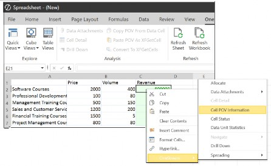
Figure 8.45
Formatting can be applied to the Cube View. To avoid losing any formatting upon a refresh, a more robust solution is Selection Styles. This feature allows for named areas to have formatting applied that can also be similar to the Excel styles palette, resulting in changes to entire rows, columns, or specific cells. Selection Styles formatting then has the capability to be disabled, enabled, or deleted from the area.
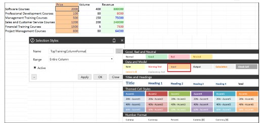
Figure 8.46
Reporting Part 1 – Show Me The Data! › Spreadsheet
Which Spreadsheet Option To Use?
While all spreadsheet options are suitable for reporting, each has distinct attributes that make it better suited for specific tasks.
Spreadsheet Cube Views are ideal for standardized, centrally managed reports. They offer extensive formatting capabilities, support links to other Cube Views and dashboards, and enable drill-down for deeper analysis. Cube View connections remain live and data can therefore be refreshed and submitted. Additionally, Spreadsheet Cube Views support dynamic prompts and parameter selection, making reports interactive and adaptable. They do, however, require security settings, and Spreadsheet Cube Views may not be the best option for quick, ad-hoc analysis.
Quick Views are ideal for rapid, ad-hoc analysis, easily created by end-users as needed. They enable on-the-fly data exploration, with new members appearing automatically to minimize ongoing maintenance.
Formatting options are limited compared to Spreadsheet Cube Views and users do need an understanding of the data model to build effective Quick Views.
Spreadsheet Retrieve is ideal for creating highly tailored reports, allowing full customization of calculations within Excel. However, it does not maintain a live connection to the data source – manual refreshing is required to update values. Features such as drill-down and dynamic prompts are not supported, and maintaining reports can become challenging if the underlying data model changes.
Reporting Part 1 – Show Me The Data!
Report Books
A report book has the capability to display a variety of report types, including Cube Views, dashboards, dashboard charts, Spreadsheet, and extensible documents. Once set up, the results of these reports can be previewed as individual documents page by page, or combined as a single document. The output can be a PDF document or a multi-tab Excel file, which can be zipped as a package if required. Report books are ideal for reviewing the results of a workflow that can easily be distributed to all the stakeholders who are part of the financial close (monitoring the status and health of the business), as well as executives for decision-making.
The report package can be simply emailed out, but for a more robust distribution method, the OneStream Parcel Service solution (from the Solution Exchange) sets up a more efficient process.
The creation of report books is straightforward. Within the Application tab, the Books page is selected. The Report Designer is seen where an existing Report Book can be opened or by using the Create New Book icon followed by the + icon in the toolbar to select the item we need to add to our Report Book. The options to select from are a File, Excel Export Item, Report, Loop, conditional statements, or Item to Change Parameters.
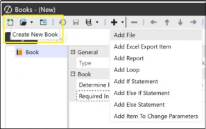
Figure 8.47
If the Add Report was selected, for example, this is where a report type – such as a Cube View or dashboard – can be embedded, as shown in Figure 8.48
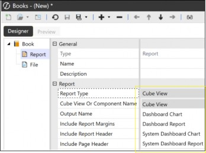
Figure 8.48
One of the key points to take away on the use of report books is the ability to loop through a range of members instantly, displaying a report for each of those members. For example, in Top Training, Americas has four Entities: US, Canada, Mexico, and Brazil, and a loop can be set up in the report book with a filter that displays Americas and its children. This will then run a process multiple times, displaying a report for all the entities.
Item To Change Parameters allows you to turn off parameters that are embedded in the reports used. For example, if a parameter is for an entity selection, this will be ignored to instead work with the loop.
Further to creating loops, conditional statements that embed certain criteria can also be applied. When this event happens, the report book then adds an additional report. For example, Top Training has a pop-up training center in Miami that is used from time to time (defined in the User Defined dimension). Our report book can contain an If statement to check if Miami has data; if so, the report book then adds the Miami report to the output.
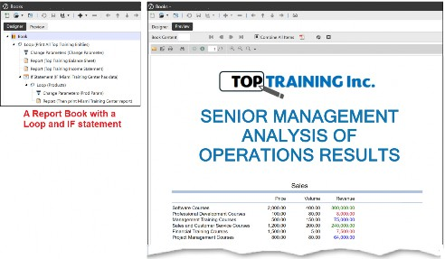
Figure 8.49
When using If / Else statements and Loops, more advanced criteria can also use business rules that allow you to add reports (as per our Miami example in Figure 8.49) or completely omit a report if it has no data.
Further indepth discussions on report books are covered in the OneStream Advanced Reporting and Dashboards Handbook
Reporting Part 1 – Show Me The Data!
Best Place To Store Data For Reporting
When reporting in OneStream, the cube is the key place to retrieve data from. But this may not always be the case as reports can also depend on the granularity or detail of the information required.
When we require large amounts of data or transient data – which change regularly – this may have been placed outside of the cube for efficiency, or to avoid the cube holding large infrequently-used data such as names, invoice numbers, and addresses.
Apart from the cube, data can be stored in external tables or databases. Examples such as BI Blend tables and Table Data Manager are optimized for reporting on large data sets.
BI Blend Table is a read-only modeling solution designed to combine multidimensional analysis with transactional data, making it ideal for operational data that changes frequently.
Data is stored in relational tables, enabling the use of existing cube dimensions and hierarchies while supporting real-time, responsive reporting and rapid aggregation. Calculation capabilities are limited – there is no support for complex consolidation logic or translations.
Although BI Blend Table does not connect directly to source systems, it leverages the same integration tools as the OneStream platform.
Table Data Manager (downloaded from Solution Exchange) assists with creating customized tables and views within a database. Business rules can be written to automate data loads and access to Table Data Manager can be restricted.
Once created, these tables can be used in dashboards, workflows, and reports, enabling advanced analytics and operational reporting beyond the cube.
The staging area in the OneStream platform is another place where data can be stored, which is a lot more granular than the cube.
This area is considered the holding ground to validate data against transformation rules and check the intersection between the source items and target members. It has the capability to use Label Source Dimensions that hold descriptions such as trial balance narrative, or bank statement transaction information.
Attribute Dimensions and Attribute Value Dimensions are also available and can hold, for example, invoice descriptions and invoice values respectively. These will not be loaded to the cube, but can be queried by a report writer to obtain the data directly from the staging area if required.
Non-cube data that is stored in external tables, databases or OneStreams staging area can be queried into reports, dashboards and spreadsheets.
Reporting Part 1 – Show Me The Data!
Conclusion
From this chapter, we can see how Cube Views play an important role in the OneStream platform. Cube Views are versatile and easy to build, and they are the first place to view cube data. Other report types, such as dashboards and spreadsheets for reporting also use them.
When building a Cube View for reporting, it is important to keep ‘the end in mind’, and work with the user on requirements. Cube Views start in the Cube View Group and end in the Cube View Profile, where access can then be provided to the user.
Construction of the Cube View takes the form of working through the sliders in the Design tab (or the Advanced tab), with the Cube View POV, or General Settings that include sharing, being able to modify the cell, being able to calculate, as well as other settings. Then, the various header and cell formatting menus.
The Cube View can be run from various places in the platform and – once executed – the data cells will be read-only or writable or a combination of both. If writable, data can be manually entered by the user, or the spreading tool can assist in populating a range of cells at once, using a number of spreading methods.
The members used for Cube View data can be handpicked, but with the ease of having substitution variables prebuilt into the platform (as well as parameters that can be created) member selection can be made dynamic.
For the avid spreadsheet user, the Spreadsheet tool provides most of the Excel features with the Excel Add-In option having the full complement. In either option, Quick Views can be constructed, bringing in data and the ability to format. A direct Cube View connection is also available, presenting the Cube View in spreadsheet fashion with spreading and formatting features.
The report book feature in the presentation section of the Application tab is to work with the many finished report types, for ease of presentation and distribution.
This chapter has delved into a lot of the reporting aspects of OneStream, but a certain reporting report type has stayed out of the limelight so far. It makes a grand entrance next!